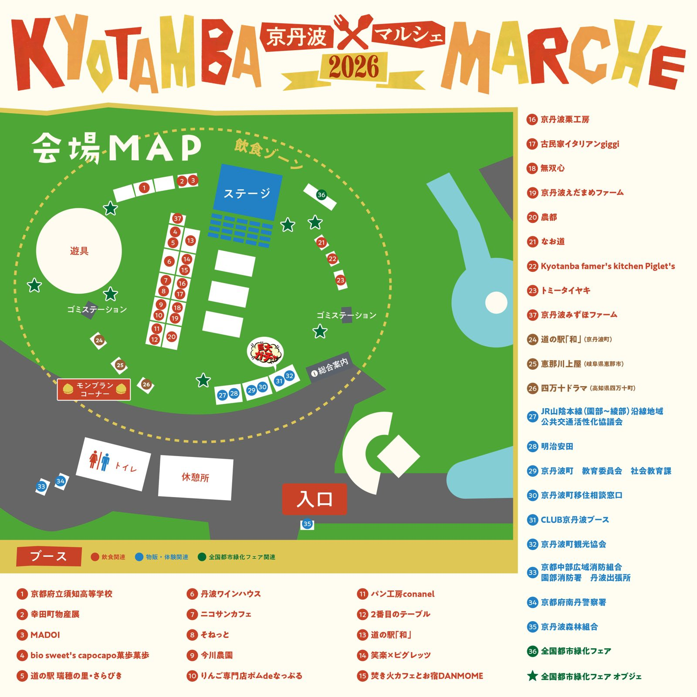

京丹波マルシェ2026、開催決定! 京丹波町の魅力「食」を発信するイベントです。京丹波町の農産物や特産品の魅力を広く発信し、町内外の交流人口を増加させるとともに、地域産業の振興、住民の誇りと愛着の醸成を図ることを目的としています。9月18日から11月8日まで開催の「第43回全国都市緑化フェア in 京都丹波」を盛り上げる、京丹波町内最大のイベントとして実施されます。

店名をタップすると、「案内ページ」はそのお店・団体の案内ページへ、「検索」はお店の名前での検索結果へ移動します(公式サイトを確認できたものだけ、案内ページにしています)。